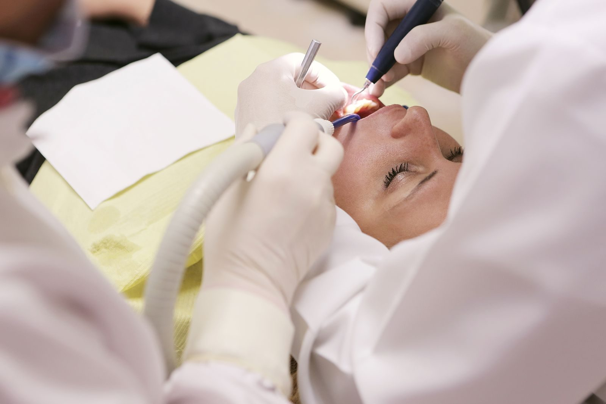

Ciudad Azteca 1ª sección
Especialidades odontológicas, también en domingo.
Blvd. de los Aztecas esquina Cuitláhuac, lote 30, manzana 409, C.P. 55120. 4.3 de 5 a partir de 18 opiniones en una ficha derivada de Google; la hoja del proyecto contabilizaba 31. Lunes a sábado de 9:00 a 21:00; domingo de 10:00 a 15:00.

El Dr. Rubio, en las reseñas
Un apellido en la fachada, opiniones encontradas.
Las reseñas hablan de «los doctores» en plural y, en dos casos, del Dr. Rubio en particular: una lo describe como amable y atento; otra, de diciembre de 2025, relata un traumatismo bajo la lengua con la fresa y un diente dañado. Hay otra ficha cercana, «Doctor Luis Ernesto Rubio Contreras», en Blvd. de los Aztecas, con el mismo teléfono; puede ser el mismo profesional u otra consulta en la zona. Aquí se sigue la ficha de la clínica en el lote 30.

Lo que sí se puede citar
“Excelente servicio. El Dr. Rubio es muy amable y atento, hace que los procedimientos se sientan muy amenos.”
Reseña en Google · enero de 2025 · 5 estrellas
“Muy recomendados, hacen buen trabajo, yo llevé a mis abuelos y ahí les solucionaron todo.”
Reseña en Google · abril de 2025 · 5 estrellas
“La atención es excelente y todo es muy limpio, lo recomiendo 100%.”
Reseña en Google · abril de 2025 · 5 estrellas
“Me atendió el Dr. Rubio, de edad avanzada […] me causó un traumatismo abajo de la lengua con la fresa, que tardó más de 15 días en ‘sanar’, aparte del diente que destruyó.”
Reseña en Google · diciembre de 2025 · 1 estrella
Preguntas frecuentes
¿Tienen sitio web oficial?
No se encontró un sitio oficial propio. Esta página es un mockup.
¿Cuál es el horario?
Lunes a sábado de 9:00 a 21:00; domingo de 10:00 a 15:00. Fuente: ficha derivada de Google. Es de los pocos consultorios de este lote que publica domingo abierto.
¿Dónde están?
Blvd. de los Aztecas esquina Cuitláhuac, lote 30, manzana 409, Ciudad Azteca 1ª sección, C.P. 55120, Ecatepec de Morelos. Coordenadas: 19.541542, −99.034679.
¿Por qué 18 opiniones aquí y 31 en la hoja?
La ficha consultada reportó 4.3 a partir de 18 reseñas. El proyecto tenía 31. Se declara el desfase; no se inventa el resto.
¿Cómo agendo?
Al 55 5779 1379. No se publicó un correo en la ficha consultada.
Ciudad Azteca
Blvd. de los Aztecas esq. Cuitláhuac
Lote 30, manzana 409, Ciudad Azteca 1ª sección, Ecatepec de Morelos, C.P. 55120.
| Lunes a sábado | 9:00 – 21:00 |
| Domingo | 10:00 – 15:00 |